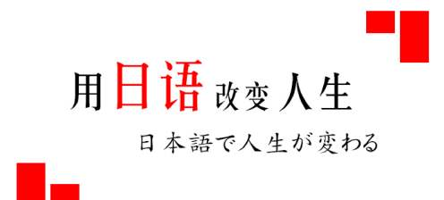

よう、そう、らしい、みたい
2020 年 4 月 17日
「らしい」用来表达：
说话人根据某种有相当把握的客观依据，判断为“好像……为（某种情况）”。换句话说，也就是说话人虽然不能断然肯定是一个什么情况，但依据各种迹象、现象，可以认定十之八九是说话人认为的情况。
「ようだ」用来表达：
依据自身的感觉做出的主观判断，因是按照自己的感受所做出的判断......
文章标题
2019 年 4 月 17日

美文阅读...
日语教程 - 学的不仅是日语，更是梦想！日语教程 - 学的不仅是日语，更是梦想！日语教程 - 学的不仅是日语，更是梦想！日语教程 - 学的不仅是日语，更是梦想！
关于高考日语
玩转日语，决战高考！
近几年，全国范围内用日语代替英语参加高考的考生人数逐年上升，到了2019年更是有超过30000名考生选择高考日语。
报考大学有限制？
除外国语言文学类专业可以做出相应的限制，毕竟这类专业是需要学生有一定语言基础的。不过，对于想要靠日语参加高考的同学来说，这类专业估计也不会在备选之列。所以，根本不需要担心影响报考院校和专业的问题啦~